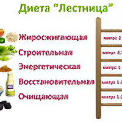

Как похудеть на -5кг
Японская диета
Срок: 7 или 14 дней. Результат: -3-9 кг. Суть: японская диета занимает второе место по
популярности. Ограничиваются потребление жиров и углеводов, упор делается на белки.
Кефирная диета
Срок: 7 дней. Результат: -5 кг. Суть: кефир – напиток полезный, но диета на его основе
считается очень жесткой, диета не сбалансирована, не покрывает всех потребностей человека в
витаминах и минералах.
Диета Маргариты Королевой на 9 дней
Срок: 9 дней. Результат: -3-9 кг. Суть: Маргарита Королева – это один из самых известных
диетологов в России, услугами которой пользуются именитые люди. Маргарита помогает
достигнуть желаемого результата каждому своему клиенту.
Английская диета 21 день
Срок: 21 дней. Результат: -7-10 кг. Суть: основной принцип диеты – это постоянная смена
белковых и овощных дней. Чередовать их нужно будет каждые 2 дня. Большую часть килокалорий
человек должен получить во время обеденного перерыва, а не за завтраком.
Диета Лесенка

Срок: 5 дней. Результат: -8 кг. Суть: лесенка – диета, которая предполагает ограничение
углеводов, а также уменьшение суточной калорийности. Каждый последующий день представляет
собой как бы «ступень», продвигающую человека к его заветной цели.